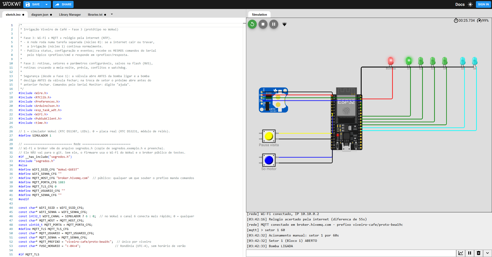
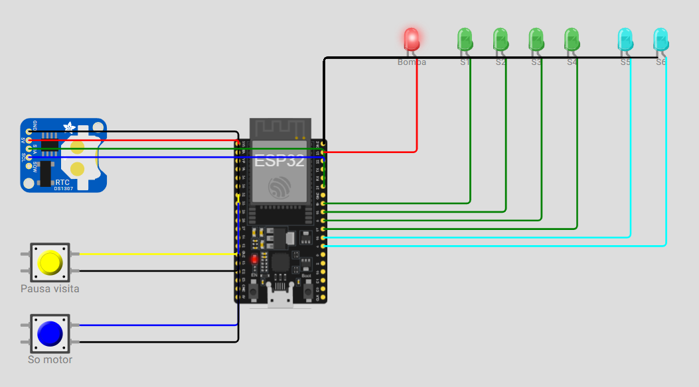
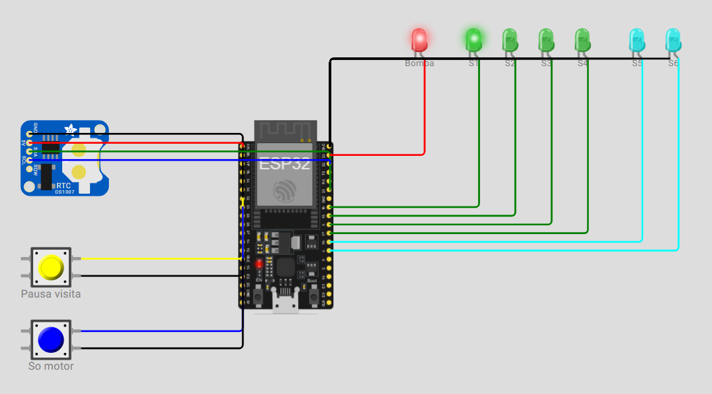
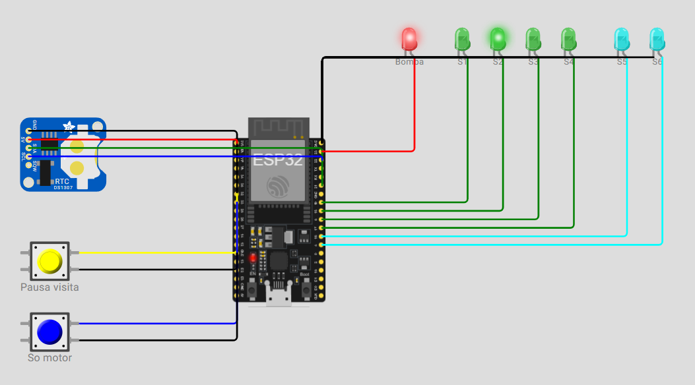
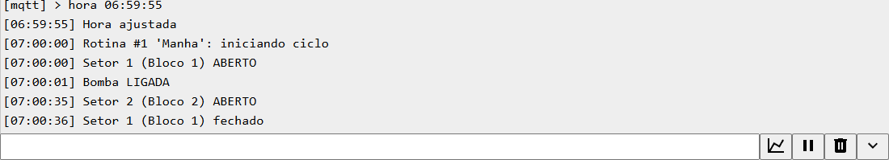

Documentação técnica
10. Arquitetura
- Regra de ouro: as rotinas rodam no ESP32. A nuvem só configura e acompanha; sem internet o viveiro continua sendo irrigado.
- O navegador nunca fala direto com o broker: a API é a única ponte (guarda as credenciais, valida permissões e registra o histórico).
- O mesmo conjunto de comandos de texto funciona pelo Serial (manutenção local) e pelo MQTT (app).
| Peça | Tecnologia | Onde |
|---|---|---|
| Controlador | ESP32 (Arduino), RTC DS3231, relés | Quadro do viveiro (protótipo no Wokwi) |
| Broker | MQTT 3.1.1 com TLS, usuário/senha | EMQX Cloud Serverless — d22ad7dc.ala.us-east-1.emqxsl.com:8883 |
| API | NestJS 12, Prisma 7, mqtt.js, SSE | Render — viveiro-api-5tq7.onrender.com |
| Banco | PostgreSQL | Neon |
| App | React 19, Vite, Tailwind, React Query, PWA | Vercel — irrigacao-viveiro.vercel.app |
Repositório (monorepo npm workspaces): apps/api, apps/app, firmware/, ferramentas/, docs/, render.yaml, .github/workflows/.
11. Hardware e circuito
| Função | GPIO | Observação |
|---|---|---|
| Relé da bomba (aciona a bobina do contator) | 23 | Motor sempre via contator |
| Solenoides setores 1–4 (blocos internos) | 19, 18, 5, 17 | Solenoides 110 V via módulo de relés |
| Solenoides setores 5–6 (externos) | 16, 4 | |
| Botão "Pausa visita" | 32 | INPUT_PULLUP, aciona em nível baixo |
| Botão "Só motor" | 33 | INPUT_PULLUP |
| RTC (SDA / SCL) | 21 / 22 | DS3231 na placa real (DS1307 no simulador) |
Módulos de relé comuns acionam em nível baixo; o firmware trata isso com #define SIMULADOR 0 (no simulador os LEDs acendem em nível alto). Itens previstos: ESP32 DevKit, módulo de 8 relés optoacoplado (bomba + 6 setores + reserva), contator e disjuntor dimensionados pela plaqueta do motor, RTC DS3231, fonte 5 V com nobreak 18650, chave MAN/0/AUT, caixa IP65 e válvulas reguladoras de pressão por setor. A instalação de força deve ser feita por eletricista.
12. Firmware do ESP32
Arquivo único firmware/sketch.ino (Arduino). Bibliotecas: RTClib, ArduinoJson 7, PubSubClient. Credenciais em firmware/segredos.h (fora do git; modelo em segredos.exemplo.h).
12.1 Duas tarefas
- Irrigação (loop principal, núcleo 1, vigiada pelo watchdog de 10 s): agendador, máquina de ciclo, modos, botões, Serial, status.
- Rede (FreeRTOS, núcleo 0): Wi‑Fi, MQTT, publicação. Reconecta sozinha (Wi‑Fi a cada 15 s, MQTT a cada 5 s). Comunicação com a irrigação por filas; se a rede travar, a irrigação não percebe.
12.2 Máquina do ciclo e sequenciamento seguro
| Estado | O que acontece |
|---|---|
| OCIOSO | Nada ligado; o agendador procura uma rotina devida. |
| MISTURANDO | Só adubação: bomba ligada, válvulas fechadas, pelo tempo de mistura. |
| ABRINDO | Válvula do 1º setor aberta; 1 s depois liga a bomba. |
| IRRIGANDO | Setor atual aberto pelo tempo "ligado". |
| TROCANDO | Abre o próximo setor e, 0,5 s depois, fecha o anterior. |
| DESLIGANDO | Bomba desligada; 2 s depois fecha todas as válvulas (evita golpe de aríete). |
Proteções: bomba ligada continuamente por mais de 60 min é desligada (failsafe); pausa visita e só motor têm tempo máximo; setor vazio ou não instalado nunca entra na fila; sem setor disponível a bomba não liga.
12.3 Agendador
- Uma rotina está devida quando a janela está aberta, o dia confere (dia em que a janela abre) e: é o 1º ciclo da janela, ou já passou a pausa desde o fim do último ciclo.
- Pausa 0 = execução única por janela. Janela com fim < início cruza a meia-noite.
- Só um ciclo por vez; rotinas sobrepostas esperam.
12.4 Persistência, relógio e modos
- Configuração (setores, rotinas, limites) em JSON na NVS (Preferences) — gravação atômica; padrão de fábrica com 3 rotinas de exemplo.
- Relógio: RTC com bateria + NTP ao conectar e a cada 6 h; fuso
<-04>4(Rondônia, UTC−4). - Modos: AUTOMATICO, PAUSA VISITA, SO MOTOR (botões físicos ou comandos).
12.5 Comandos (Serial e MQTT)
| Comando | Efeito |
|---|---|
status · rotinas · config · rede | Consultas |
pausa · motor · parar | Liga/desliga pausa visita e só motor; interrompe o ciclo |
setor N S | Aciona o setor N por S segundos (manual) |
bloco N mudas|vazio | Marca o bloco |
rotina {json} | Sem id cria; com id altera só os campos enviados |
apagar|ativar|desativar|prever ID | Gerência de rotinas |
setorcfg N {json} · param {json} | Configura setor; limites (pausaVisitaMin, soMotorMin) |
hora HH:MM[:SS] · data AAAA-MM-DD | Ajuste manual do relógio |
fabrica · reiniciar | Padrão de fábrica; reinicia o ESP32 |
13. Simulação no Wokwi
O protótipo roda no simulador wokwi.com (ESP32 com Wi‑Fi real). Para rodar: novo projeto ESP32, colar sketch.ino e diagram.json, criar a aba segredos.h (sem ela, usa o broker público de testes) e clicar em ▶. Não salve o projeto com o segredos.h (projetos salvos ficam acessíveis a quem tiver o link).






14. Protocolo MQTT
Prefixo do controlador: viveiro-cafe/proto-bea19c (constante MQTT_PREFIXO no firmware e campo prefixo no banco).
| Tópico | Sentido | Retido | Conteúdo |
|---|---|---|---|
<prefixo>/conexao | ESP32 → API | sim | online / offline (o offline é o Last Will, publicado pelo broker) |
<prefixo>/status | ESP32 → API | sim | Estado atual; quando muda e a cada 30 s |
<prefixo>/config | ESP32 → API | sim | Configuração completa; no boot e a cada alteração |
<prefixo>/evento | ESP32 → API | não | {"hora":"07:00:00","msg":"Setor 1 (Bloco 1) ABERTO"} |
<prefixo>/cmd | API → ESP32 | não | Comando em texto (tabela 12.5) |
<prefixo>/resposta | ESP32 → API | não | {"cmd":"…","saida":"texto impresso pelo comando"} |
status: {"modo":"AUTOMATICO","ciclo":"irrigando","rotinaId":1,"rotina":"Manha","bomba":true,
"setores":[{"n":1,"aberto":true,"mudas":true,"instalado":true}, …],
"hora":"2026-11-13T07:00:31","uptimeS":1234,"wifiRssi":-65}
rotina: {"id":1,"nome":"Manha","tipo":"irrigacao","dias":"todos","inicio":"07:00","fim":"08:00",
"ligado":30,"pausa":240,"setores":[1,2,3,4],"ativa":true}
15. API
NestJS 12 + Prisma 7 (Postgres). Autenticação JWT (7 dias), senhas com bcrypt, limite de requisições (throttler), CORS restrito ao app.
| Rota | Quem | Função |
|---|---|---|
POST /auth/login, GET /auth/me | todos | Login |
GET /controladores[/:id] | todos | Status, config, online, última notícia |
GET /controladores/:id/tempo-real | todos | SSE: status, config, conexao, evento, ping |
GET /controladores/:id/eventos | todos | Histórico paginado |
GET|POST /controladores/:id/comandos | por perfil | Auditoria / envia comando e espera a resposta (até 15 s) |
POST /controladores | admin | Cadastra outro controlador |
GET|POST|PATCH /usuarios | admin | Usuários |
GET /saude | público | Health check ({"ok":true,"mqtt":true}) |
Permissões de comando — operador: status rede rotinas config prever pausa motor parar setor bloco; administrador: também rotina apagar ativar desativar setorcfg param hora data reiniciar fabrica.
Banco: Usuario (perfil ADMIN/OPERADOR), Controlador (prefixo, online, vistoEm, último status e config em JSON), Evento (histórico), Comando (auditoria: usuário, texto, resposta, horários). Suporta vários controladores.
Ponte MQTT: assina <prefixo>/#; mensagens retidas recebidas logo após assinar não contam como "sinal de vida" (o EMQX/HiveMQ podem marcar retain também em mensagens ao vivo, por isso o critério de 5 s).
16. App web
React 19 + Vite + Tailwind 4 + React Query, instalável (PWA). Recebe as atualizações por SSE e atualiza o cache sem recarregar; ao reconectar ou voltar ao primeiro plano, ressincroniza com a API. A prévia de rotina usa a mesma conta do firmware. A contagem regressiva da pausa é calculada no navegador entre um status e outro.
17. Infraestrutura e publicação
| Serviço | Plano | Configuração |
|---|---|---|
| Neon (Postgres) | grátis | DATABASE_URL no Render (conexão direta, sslmode=require) |
| EMQX Cloud Serverless | grátis, limite de gasto 0 | 1 mi minutos de sessão e 1 GB/mês; uso estimado ~86 mil min e ~100 MB. Usuários viveiro-api e viveiro-esp32 |
| Render (API) | grátis | render.yaml: build compila, aplica migrações e roda o seed. Variáveis: banco, MQTT, CORS, admin inicial |
| Vercel (app) | grátis | Root apps/app; VITE_API_URL |
| GitHub Actions | grátis | despertador.yml acessa /saude a cada 10 min (o Render grátis dorme após 15 min) |
Atualizar: git push na main publica API e app automaticamente. Alterações no banco: gerar a migração localmente (npm run db:migrate -w apps/api) e versionar prisma/migrations. Rodar local: npm install, npm run db:up, npm run seed -w apps/api, npm run dev:api, npm run dev:app.
18. Segurança
- MQTT com TLS; o ESP32 valida o certificado do broker (raízes ISRG Root X1 e DigiCert Global Root G2 embutidas) e usa usuário/senha próprios.
- Segredos fora do código:
.envesegredos.hignorados pelo git; credenciais só nos painéis dos serviços. - O navegador não acessa o broker; a API valida cada comando pelo perfil e registra quem enviou.
- O seed se recusa a criar o administrador sem senha definida fora do ambiente local.
19. Testes realizados (novembro de 2026)
- Firmware no Wokwi: rotina com troca de setores e sequenciamento seguro; só motor; pausa visita com retorno; bloco vazio pulado; adubação com mistura; persistência após reinício; rotina cruzando a meia-noite; validação de comandos inválidos.
- MQTT: status/config/eventos retidos e ao vivo; comandos e respostas; Last Will (offline) ao parar a simulação; NTP.
- App + API: login, painel em tempo real, acionamento manual, pausa, histórico, rotinas com prévia, layout no celular; 5 testes automatizados da API (permissões e detecção de erro).
- Produção: API conectada ao EMQX com TLS, CORS restrito ao app, ESP32 simulado conectado com TLS e aparecendo online no app; despertador executado com sucesso.
20. Limitações e próximos passos
- API no plano grátis do Render: mesmo com o despertador, pode haver breves períodos dormindo (eventos desse intervalo não ficam no histórico). Para uso real, plano Starter (~US$ 7/mês).
- Eventos gerados enquanto o controlador está sem internet não são reenviados depois.
- O aviso de conflito entre rotinas é aproximado (compara horários e dias).
- Fase 5 — sensores de umidade do solo e do ar e de temperatura, gráficos e automações (ex.: pular ciclo com solo úmido, nebulizar acima de 30 °C).
- Fase 6 — compra do hardware e teste em bancada (pendente: foto da plaqueta da bomba para dimensionar contator e disjuntor).
- Fases 7 e 8 — instalação no viveiro (quadro IP65, chave MAN/0/AUT, eletricista), atualização remota do firmware (OTA) e alerta de offline.